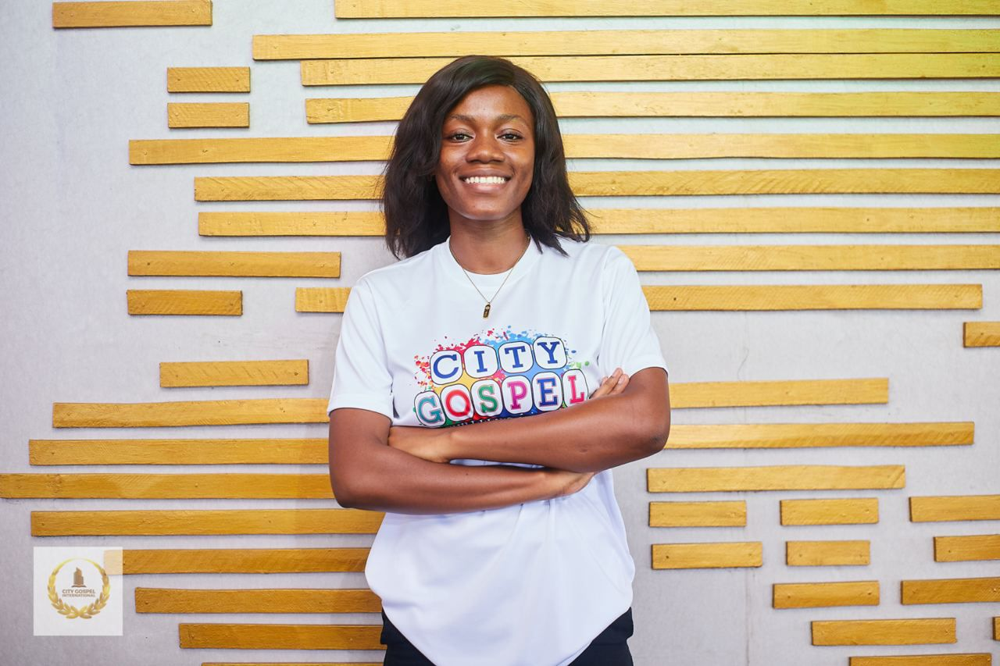

Jessica Awuradjoa Asamoah
Contact Details
Linkedin

Objective
Core Competence:
Result oriented and dedicated computer engineering graduate seeking entry
level software engineering role at _______
Adaptabilty | Organised | Reliable | Tactful | Result Oriented | Values
Community | Programming Profiency
Education
Bachelor of Science in Engineering (Computer Engineering)
University of Ghana, Accra, Ghana
Thesis: Food Recognition using machine learning and artificial
intelligence with chatbot feature tailored for diabetics
West Africa Senior School Examinations Certificate in Science
Achimota School, Accra, Ghana
Work Experience
Engineering Intern, Lucid Array, Accra, Ghana
-
Increased company productivity by quickly learning backend development ,
which reduced the workload of the senior developer.
-
Ensured smooth user experience by rigorously testing software before
release
-
Implemented solution modifications to address unforeseen client use
cases, optimizing workflow
Intern, Youth Employment Agency, Accra, Ghana
-
Collaborated with a six-person team to build a Fleet Management System
using Laravel
Computer Engineering Intern, HarTet Technologies, Accra, Ghana
-
Identified and addressed potential issues in their ERP software with
thorough testing, leading to a more user-friendly experience
Cashier and Sales Representative, Bush Canteen, Accra, Ghana
- Organised a team of 3 to collect and account for daily sales
Volunteer Experience
- Women Techmakers, Event Swag Coordinator, Accra, Ghana
- Google Developers Group, Coordinator, Accra, Ghana
- Nsromma Cricket Academy, Coach, Accra, Ghana
Leadership
- Vice President, Aequitas Experience Cohort 8, Aequitas Foundation
- Team Lead, Final Year Project Team, University of Ghana
-
Treasurer, Ghana United Nations Students Association, Achimota School
- Sports Prefect, Achimota School
Projects
Food calories estimation and chatbot using machine learning tailored for
diabetics
-
Designed a mobile application on Flutter that allows users to track
calorie intake and access a chatbot for support
Reference
- MR. EBO BENTIL, CEO, LUCID ARRAY
-
MRS. GIFTY OSEI, LECTURER, COMPUTER ENGINEERING DEPARTMENT, UNIVERSITY
OF GHANA
Hobbies
My Hobbies